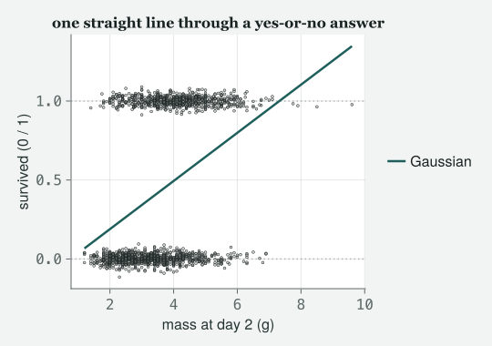
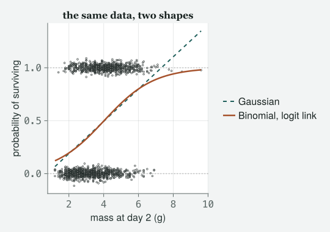
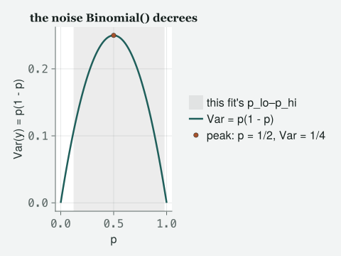
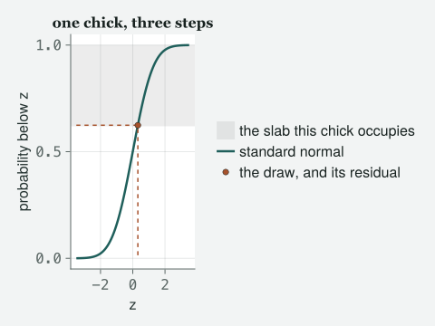
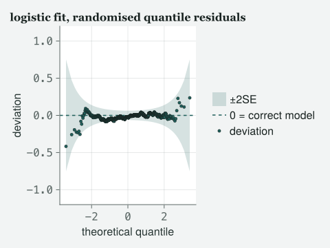
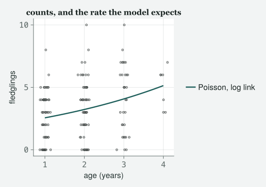

A model that gives a chick a better than hundred per cent chance of surviving is not slightly wrong. It is the wrong shape, and the family is how you fix it.
Draft
All ten classes of version 1 are drafted and their code runs end to end (1–10), with Appendix A, the preface and the coda. Every number and figure on this page was produced when the site was built; the book itself is not written.
Engines DRM.jl 0.7.1 at 26f4c4ddc (Julia 1.10.0) · drmTMB 0.7.0 (R 4.6.0) Provenance Every code block and printed result below was actually run when the site was built, and nothing is typed from memory. Every random draw is seeded in the cell that makes it, so the page comes out the same every time. Caveat The data are real: the 2012 Lundy Island chick and female records, read directly from data/2012/ChickSurvival.csv and data/2012/FemaleSuccess.csv (provenance in data/2012/README.md). Nothing here is simulated except the one seeded cell that says so.
Objectives
By the end of this class you should be able to:
Say why a linear model fitted to a yes-or-no response is the wrong shape, not merely inaccurate, and show it from the fitted values alone.
Fit a logistic regression with Binomial() and say what a coefficient means on the log-odds scale.
Turn that coefficient into an odds ratio, and turn the model into a probability for a named animal.
Explain what the family decrees about the variance, and why a GLM prints no σ table as a result.
Fit a Poisson model to counts, read a rate ratio, and run the one check that tells you the decree is about to fail.
The class
Itchy’s office, 9:00 am, and the whiteboard has been wiped for once.
TOTO has a spreadsheet of dead and living chicks and the expression of
somebody who has already tried something. MOMO has brought a different
dataset entirely, which is not how this is supposed to work but is how
it always goes.
Itchy
Class 2 gave you a line through a cloud. Every response was a length in
millimetres and could be any number at all. Today both of you have
brought me responses that cannot.
Toto
Mine is whether a chick survived. It is a one or a zero.
Momo
Mine is how many chicks a female fledged. It is a whole number and it is
never negative.
Itchy
And neither of those is a length in millimetres, so today we free the
thing Class 2 held fixed without telling you: the shape of the
noise. Load Toto’s first.
# tools/figures.jl includes tools/theme_itchy.jl itself, so one include does both.include("../tools/figures.jl")usingDRM, DataFrames, CSV, Statistics, Random, Printf, CairoMakieusingDistributions: Normal, cdf # only these two names: Distributions also has a Binomial and a Poisson, and today those words mean DRM's familiesset_theme!(theme_itchy(:light))chicks = CSV.read("../data/2012/ChickSurvival.csv", DataFrame)n_chicks =nrow(chicks)n_lived =sum(chicks.Survival)p_lived =mean(chicks.Survival)@printf("rows: %d survived: %d overall survival: %.4f\n", n_chicks, n_lived, p_lived)describe(chicks, :mean, :std, :min, :max, :nmissing)
rows: 1576 survived: 689 overall survival: 0.4372
5×6 DataFrame
Row
variable
mean
std
min
max
nmissing
Symbol
Union…
Union…
Any
Any
Int64
1
Survival
0.437183
0.496196
0
1
0
2
Sex
F
M
0
3
Mass2
3.62754
1.18806
1.2
9.6
0
4
BroodSize
3.77538
1.01871
1
6
0
5
JulianDate
79.4023
30.3853
22
141
0
Itchy
1576 chicks, of which 689 lived. Look before you model, always, and
today look hardest at the response column.
Toto
It is only ever zero or one.
Itchy
It is only ever zero or one, and there is no third value hiding anywhere
in it. Hold that thought for exactly as long as it takes you to ignore
it, which I am now going to make you do on purpose.
The model that is the wrong shape
Itchy
Fit it the Class 2 way. Same verb, same box, same family as last week.
wrong =drm(bf(@formula(Survival ~ Mass2)), Gaussian(); data = chicks)wrong
It worked. It gave me a slope and a p-value with a lot of zeros
in it.
Itchy
It worked, it converged, and nothing in that output is complaining. This
is the most dangerous kind of wrong: the arithmetic is impeccable and
the model is nonsense. Ask it what it believes. Not what it estimated,
what it believes about an actual chick.
lo, hi =extrema(fitted(wrong))n_impossible =count(x -> x <0|| x >1, fitted(wrong))@printf("fitted values run from %.4f to %.4f\n", lo, hi)@printf("fitted values outside [0, 1]: %d of %d chicks\n", n_impossible, n_chicks)
fitted values run from 0.0671 to 1.3477
fitted values outside [0, 1]: 4 of 1576 chicks
Toto
The biggest one is bigger than one.
Itchy
The biggest one is 1.348, and it is a probability. This model believes
that a heavy chick has a 135% chance of surviving, which is a sentence
about birds and it is not a true one. And 4 chicks are given a
probability the world does not contain — counted by count,
handed an arrow function as filter was in Class 1, with
|| reading or.
Momo
But most of the fitted values are legal. It is 4 chicks out of 1576.
Itchy
Then do not rest the case on those 4. The impossible predictions are the
fault you can see; there is a worse one underneath, and it is wrong for
every row rather than 4 of them. Class 2’s σ was one number for every
bird. Here the response is a coin flip, so its variance is p(1 − p) —
biggest for a chick with an even chance, shrinking towards nothing at
either extreme. Constant σ is violated by construction,
before a single chick is weighed. That is why this model’s standard
errors are wrong at every mass, including the masses where its
predictions are legal, and it is exactly the theme of today’s class
turned on today’s wrong model.
Momo
So the p-value was tiny and the model was still impossible.
Itchy
The p-value was tiny and the model was still impossible, and I
want that on the first page of your notes. A small
p-value is not evidence that the model is the right
shape. It cannot be, because it is computed inside the
model. You have to look outside it, at the predictions, at your
organism, and ask whether the model believes anything absurd. Draw it.
# A little vertical jitter so a thousand overlapping zeros and ones are visible# as a band rather than a line. Seeded, so the picture is the same every time the site is built.rng =MersenneTwister(20260907)jitter =0.03.*randn(rng, n_chicks)xs =range(minimum(chicks.Mass2), maximum(chicks.Mass2), length =200)b_wrong =coef(wrong, :mu)fig =Figure(size = (540, 380))ax =Axis(fig[1, 1]; xlabel ="mass at day 2 (g)", ylabel ="survived (0 / 1)", title ="one straight line through a yes-or-no answer")hlines!(ax, [0.0, 1.0]; color = (:grey, 0.5), linestyle =:dot)scatter!(ax, chicks.Mass2, chicks.Survival .+ jitter; markersize =4, color = (:grey, 0.35))lines!(ax, xs, b_wrong[1] .+ b_wrong[2] .* xs; linewidth =2.5, label ="Gaussian")# legend outside the axis so it can never sit over a data point, matching tools/figures.jlLegend(fig[1, 2], ax; framevisible =false)fig

Figure 1: Chick survival against mass at day two, jittered vertically so the overlapping zeros and ones separate into a band, with dotted lines at 0 and 1 marking the only two answers the world allows. The straight line from the Gaussian fit climbs off the top of that band for the heaviest chicks and would leave through the floor for chicks lighter than these — a shape free to promise a probability the world does not contain.
Itchy
The dotted lines are the only two answers the world allows. The straight
line leaves through the ceiling on the right and would leave through the
floor on the left if the chicks were lighter. That is not a line that
fits badly. That is a line that is the wrong shape for
the question, and no amount of extra data will bend it.
The model that is the right shape
Itchy
Momo, you have been waiting to say something for ten minutes.
Momo
In R this was glm with family = binomial on
the end, and I typed it because I was told to. What I never got told is
what it actually changes.
Itchy
Then that is the lesson, and it changes exactly two things. First, it
puts the straight line somewhere the straight line is allowed to go, and
then bends it back. The line lives on the log-odds
scale, which runs from minus infinity to plus infinity like a proper
linear predictor — the straight-line sum of intercept and slopes that
every regression builds before anything bends it — and a function called
the link squashes it back into nought-to-one before it
meets a chick. Second, and this is the part almost nobody is taught, it
changes what the model claims about the noise. Watch
both. One word changes in the call.
logit_fit =drm(bf(@formula(Survival ~ Mass2)), Binomial(); data = chicks)logit_fit
Distributional regression fit (Binomial)
nobs = 1576 logLik = -968.7711 converged = true
Mean model (μ):
H0: coefficient = 0
Coef. Std.Error z Pr(>|z|)
(Intercept) -2.8152 0.1968 -14.3035 2.081e-46
Mass2 0.6999 0.0514 13.6096 3.509e-42
Toto
Same verb, same box. The family is different and the numbers are bigger.
Itchy
The family is different, the numbers are on a different scale, and
something has gone missing. Momo, you were the one who
complained about the second table in Class 2. Where is it?
Momo
There is no σ table.
Itchy
There is no σ table, and that absence is the whole second half of today.
Park it for five minutes while we read the coefficient, because the
coefficient is on a scale neither of you has met.
b_logit =coef(logit_fit, :mu)slope_logodds = b_logit[2]odds_ratio =exp(slope_logodds)@printf("slope on the log-odds scale : %.4f\n", slope_logodds)@printf("exp(slope), the odds ratio : %.4f\n", odds_ratio)
slope on the log-odds scale : 0.6999
exp(slope), the odds ratio : 2.0135
Itchy
The number the model estimated is 0.7, and on its own it means nothing
to a biologist, because nobody has ever had an intuition about log-odds.
Exponentiate it and it becomes a sentence you can say to a bird person:
one extra gram of mass multiplies a chick’s odds of surviving by
2.01. Odds, not probability. They are not the same thing and I
will make you say the difference out loud.
Toto
Odds are the chance it happens divided by the chance it does not.
Itchy
Exactly that, and the reason the model works in odds is that odds can be
multiplied without ever leaving the space of legal answers. Double them,
double them again, they never reach one. Probabilities do not behave:
add ten per cent to ninety-five per cent twice and you have left the
world. That is why the link exists.
Momo
Then give me a probability. That is what I would put in the paper.
Itchy
Then ask the model for one, at a mass you can point at.
grid = (; Mass2 = [2.0, 3.5, 5.0])p_hat =predict(logit_fit, grid)p_mid =predict(logit_fit, (; Mass2 = [3.5]); se =true)for (m, p) inzip(grid.Mass2, p_hat)@printf("a %.1f g chick: probability of surviving %.4f\n", m, p)end@printf("\nat 3.5 g, standard error on that probability (delta method): %.4f\n", p_mid.se[1])
a 2.0 g chick: probability of surviving 0.1954
a 3.5 g chick: probability of surviving 0.4096
a 5.0 g chick: probability of surviving 0.6647
at 3.5 g, standard error on that probability (delta method): 0.0134
Itchy
A three-and-a-half gram chick has about a 41% chance of
surviving. A two-gram chick, 20%. A five-gram chick, 66%. Those
are sentences about chicks, they are in the units the question was asked
in, and not one of them is impossible. The last line puts a standard
error on the middle one, and notice how it was made: the model’s
uncertainty lives on the log-odds scale, so the engine carries it
through the squashing function onto the probability scale. That piece of
arithmetic is called the delta method, and whenever
this book says “delta-method standard error” that is all it means.
Toto
The grid is not a data frame. It starts with a semicolon.
Itchy
It is a NamedTuple, the lightest table Julia has:
(; Mass2 = [2.0, 3.5, 5.0]) is one named field holding a
vector, and grid.Mass2 reaches it exactly as
chicks.Mass2 reaches a column. predict asks
for one because it needs only the predictor values, not a whole frame’s
machinery. And under it is your first loop written out.
for (m, p) in zip(grid.Mass2, p_hat) walks two vectors side
by side — zip pairs the first mass with the first
probability, and so on — the body runs once per pair, and
end closes it. Last week’s comprehension was this loop with
the printing replaced by collecting. Now put the two models on the same
picture.
p_curve =predict(logit_fit, (; Mass2 =collect(xs)))fig =Figure(size = (540, 380))ax =Axis(fig[1, 1]; xlabel ="mass at day 2 (g)", ylabel ="probability of surviving", title ="the same data, two shapes")hlines!(ax, [0.0, 1.0]; color = (:grey, 0.5), linestyle =:dot)scatter!(ax, chicks.Mass2, chicks.Survival .+ jitter; markersize =4, color = (:grey, 0.35))lines!(ax, xs, b_wrong[1] .+ b_wrong[2] .* xs; linewidth =2, linestyle =:dash, label ="Gaussian")lines!(ax, xs, p_curve; linewidth =2.5, label ="Binomial, logit link")# legend outside the axis so it can never sit over a data point, matching tools/figures.jlLegend(fig[1, 2], ax; framevisible =false)fig

Figure 2: The same jittered survival cloud, now with the Gaussian line dashed and the logistic curve solid over it. The curve never crosses either dotted bound. Toward the heavy end it flattens sharply as survival becomes near-certain, so an extra gram buys almost nothing there; toward the light end, within this file’s range, it is still climbing well short of flat, and the most any gram buys is near the steepest point in between.
Toto
The curve flattens out at both ends.
Itchy
Look again before you hand me “both.” It flattens hard on the heavy end,
where survival is already close to certain, and an extra gram buys
almost nothing there. On the light end, in the range these chicks
actually give you, it has not gotten there yet — it is still climbing.
The curve cannot go above one or below zero, so it does run out of room
eventually, but “eventually” is not the same as “in this picture.”
Between the light end and that heavy flattening there is a steepest
point. Where that point falls is a number, not a feeling, so compute it
before you say anything about birds.
gain_low = p_hat[2] - p_hat[1] # 2.0 g -> 3.5 ggain_high = p_hat[3] - p_hat[2] # 3.5 g -> 5.0 ginflection =-b_logit[1] / b_logit[2] # the mass at which the model says p = 1/2mean_mass =mean(chicks.Mass2)frac_below =mean(chicks.Mass2 .< inflection)@printf("2.0 g -> 3.5 g buys : %.4f of probability\n", gain_low)@printf("3.5 g -> 5.0 g buys : %.4f of probability\n", gain_high)@printf("steepest point (p = 1/2) at : %.4f g\n", inflection)@printf("mean mass in these data : %.4f g\n", mean_mass)@printf("proportion lighter than it : %.4f\n", frac_below)
2.0 g -> 3.5 g buys : 0.2142 of probability
3.5 g -> 5.0 g buys : 0.2551 of probability
steepest point (p = 1/2) at : 4.0224 g
mean mass in these data : 3.6275 g
proportion lighter than it : 0.6459
Toto
The second step buys more than the first.
Itchy
It does. Two grams to three and a half buys 0.214 of survival
probability; three and a half to five buys 0.255. Across the range where
these chicks actually live, the curve is accelerating.
Had I told you a gram matters most to the smallest chick, you would now
be holding a sentence your own output contradicts.
Momo
Why that way round?
Itchy
Because a logistic curve is symmetric about a half, and the mass at
which it reaches a half is minus the intercept over the slope: 4.02 g.
The average chick in this file weighs 3.63 g, and 65% of them are
lighter than that steepest point. The majority of this sample, the
average chick included, is still climbing towards the steepest
point rather than coming down the far side. So the honest sentence is
the symmetric one: a gram matters most to a middling chick —
middling meaning near 4.02 g, where the model gives it an even chance —
and least to a chick already nearly certain to live, or nearly certain
to die.
Momo
I have read “diminishing returns” in a dozen papers about exactly this.
Itchy
And it is true wherever the data sit above the inflection — the steepest
point, where p = 1/2 — and false wherever they sit below it, which is
why it is something you compute rather than something you say. What
holds on both sides is that a gram is not worth the
same everywhere, and the straight line insists that it is. When somebody
asks you why not just use a linear model, that is the answer. Not “the
residuals are non-normal”. That.
Momo
Can I put brood size in as well?
Itchy
You can, and the sentence you get is the Class 2 sentence with one extra
clause.
logit2 =drm(bf(@formula(Survival ~ Mass2 + BroodSize)), Binomial(); data = chicks)logit2
Distributional regression fit (Binomial)
nobs = 1576 logLik = -964.9841 converged = true
Mean model (μ):
H0: coefficient = 0
Coef. Std.Error z Pr(>|z|)
(Intercept) -3.4561 0.3099 -11.1508 7.099e-29
Mass2 0.7204 0.0523 13.7828 3.236e-43
BroodSize 0.1495 0.0546 2.7402 0.006141
Itchy
Each coefficient is now “what one more of this buys, holding the
other fixed”, exactly as in Class 2, and the exponentials are
odds ratios rather than millimetres. A gram of mass multiplies the odds
by 2.06; a chick more in the brood multiplies them by 1.16. And AIC
fell by 5.57 when we added it, so the extra predictor
paid for itself.
Toto
Bigger broods are better for a chick? I would have guessed the
opposite.
Itchy
So would I, and this is where you stop being a statistician and go back
to being a biologist. A brood is big because a parent could afford a big
one. The model has not told you that crowding is good; it has told you
that, in these data, chicks in big broods survive better, and the reason
for that is a question about territories and parents that no coefficient
will answer. This is also exactly the point where Class 9 will tell you
that the chicks in one brood are not independent, so that standard error
is too small. Today we pretend — and on this file we would have to. It
records BroodSize, how many chicks were in the nest, and it
never records which nest. You cannot put a random effect on a
grouping nobody wrote down, so the repair is a dataset that carries a
brood identifier, not a cleverer formula on this one. Class 9 stops
pretending, on a file that can.
The shape of the noise
Itchy
Now the missing table, which is the actual title of this class. Momo, in
Class 2 what did σ do?
Momo
It said how far the birds scattered around the line, and it was the same
number for every bird.
Itchy
And it was a free parameter: the model estimated it
from the data, and in Class 4 you will put predictors on it. Today it is
gone, and it is gone because it is no longer free. Toto, a chick with a
survival probability of one half. How much does it vary?
Toto
…it either lives or it dies.
Itchy
And across many such chicks, the variance of that coin flip is p times
one minus p, which for a half is a quarter. You did not estimate that.
You did not get a choice about it. The moment you said
Binomial(), you decreed that the variance is p(1 −
p) — fixed by the mean, with no freedom left in it. Same for
Momo’s counts in twenty minutes: say Poisson() and you have
decreed that the variance equals the mean. Show them.
p_fit =fitted(logit_fit)decreed = p_fit .* (1.- p_fit)p_lo, p_hi =extrema(p_fit)v_lo, v_hi =extrema(decreed)@printf("fitted probability : %.4f to %.4f\n", p_lo, p_hi)@printf("decreed variance p(1-p): %.4f to %.4f\n", v_lo, v_hi)
fitted probability : 0.1218 to 0.9802
decreed variance p(1-p): 0.0194 to 0.2500
Momo
Numbers. You said “show”, and I got two ranges.
Itchy
Fair complaint. Here is the shape those numbers came from, not a
description of it.
p_grid =range(0, 1, length =200)var_grid = p_grid .* (1.- p_grid)fig =Figure(size = (480, 360))ax =Axis(fig[1, 1]; xlabel ="p", ylabel ="Var(y) = p(1 - p)", title ="the noise Binomial() decrees")# fitted range shaded first, curve drawn on top so it is never hidden by itvspan!(ax, p_lo, p_hi; color = (:grey, 0.15), label ="this fit's p_lo–p_hi")lines!(ax, p_grid, var_grid; linewidth =2.5, label ="Var = p(1 - p)")scatter!(ax, [0.5], [0.25]; markersize =9, color =Cycled(2), label ="peak: p = 1/2, Var = 1/4")# legend outside the axis, matching tools/figures.jlLegend(fig[1, 2], ax; framevisible =false)fig

Figure 3: The variance Binomial() decrees, Var = p(1 − p), across every probability the family allows: it peaks at 1/4 when p = 1/2 and is pinned to zero at both ends. The shaded strip is where this chapter’s fitted probabilities sit on that curve.
Itchy
That curve is not fitted to anything. It is what Binomial()
commits you to the moment you say the word, for every p from zero to
one, on every dataset that will ever exist. It peaks at a quarter, for
the chick with an even chance, and falls to zero at either end, where
there is nothing left to be unsure about. The shaded strip is where this
chapter’s own chicks sit on it: fitted probabilities from 0.122 to 0.98,
so decreed variances from 0.019 at whichever end sits nearer a wall up
to 0.25 for the chicks nearest an even chance. Every one of those
numbers was fixed by the fitted mean and nothing else. And notice what
the picture cannot show you: no Mass2 on either axis, no
BroodSize, no predictor at all. The variance function does
not know what moved the mean. It only knows the mean itself. There is no
σ table to print because there is no σ to estimate: the family has
already spent it.
Momo
And if the decree is wrong?
Itchy
For Toto’s chicks it cannot be, and that is worth saying slowly, because
it is the one place where the word “assumption” misleads. A response
that is only ever zero or one has variance p(1 − p) as a matter of
arithmetic: a coin that lands heads with probability p
has that variance and no other is available to it. There is no
overdispersed Bernoulli — the name for exactly that single coin flip —
to go looking for. What can be wrong with binary data is the
other thing — that the rows are not independent draws, because chicks
from one nest share a pair of parents and a territory — and that is
clustering, which is Class 6, not Class 4.
Momo
And for my counts?
Itchy
For your counts the variance really is a separate claim, and data can
contradict it. Then you are in trouble, quietly, in the standard errors,
and you will not see it in the coefficients. That is Class 4, and I am
deliberately not teaching it today. What I will do is give you
the check, at the end of the hour, on Momo’s counts, where it fails in
front of you. One sentence for whenever you read somebody else’s R
output: glm prints the decree out loud, as the line
“(Dispersion parameter for binomial family taken to be 1)”, where this
engine leaves it implicit in the absent σ table — and that line is not
boilerplate, it is the model’s claim about the noise, phrased as an
instruction because nothing was estimated and nothing was checked.
Is it any good?
Itchy
Before anybody writes this down: residuals. And a plain residual is
useless here, because “observed minus fitted” for a chick that lived is
one minus a probability, and those cannot be normally distributed no
matter how right the model is.
Toto
So what do I plot?
Itchy
Randomised quantile residuals (Dunn & Smyth 1996).
Take one chick and make its residual by hand, in three steps, and then
the plot will mean something.
p2 =fitted(logit2)i =1# the first chick in the filey_i, p_i = chicks.Survival[i], p2[i]# Step 1. How much probability does the model put at or below the value we saw?# Below "died" there is nothing, so a dead chick's answer is anywhere in [0, 1 - p];# a survivor's is anywhere in [1 - p, 1]. An interval, not a number.lo_i, hi_i = y_i ==0 ? (0.0, 1- p_i) : (1- p_i, 1.0)# Step 2. Draw a point uniformly inside that interval. Seeded, like every draw.rng_q =MersenneTwister(31)u_i = lo_i + (hi_i - lo_i) *rand(rng_q)# Step 3. Which standard-normal value has exactly that much probability below it?r_i =quantile(Normal(), u_i)@printf("chick %d: survived = %d, fitted p = %.4f\n", i, y_i, p_i)@printf("interval of probability it occupies : [%.4f, %.4f]\n", lo_i, hi_i)@printf("uniform draw inside it : %.4f\n", u_i)@printf("its randomised quantile residual : %.4f\n", r_i)
chick 1: survived = 1, fitted p = 0.3808
interval of probability it occupies : [0.6192, 1.0000]
uniform draw inside it : 0.6240
its randomised quantile residual : 0.3161
Itchy
Step one asks the fitted model how much probability it puts at or below
the value you saw. For a chick that survived, that is not one number,
because a yes-or-no answer owns a whole slab of probability rather than
a point: this chick’s slab runs from 0.619 to 1.0. In the cell that is
the line with the question mark:
y_i == 0 ? (0.0, 1 - p_i) : (1 - p_i, 1.0) reads if the
chick died, this pair, otherwise that pair — Julia’s one-line
if, each pair being an interval. Step two draws a point
uniformly inside the slab; that is the randomised part, and it
is why the call takes a seed. Step three looks that draw up on the
standard normal curve and asks which value has exactly that much
probability below it. That value is the residual: 0.32, for a chick the
model gave a 38% chance to. Draw the three steps.
zs =range(-3.5, 3.5, length =300)fig =Figure(size = (480, 360))ax =Axis(fig[1, 1]; xlabel ="z", ylabel ="probability below z", title ="one chick, three steps")hspan!(ax, lo_i, hi_i; color = (:grey, 0.15), label ="the slab this chick occupies")lines!(ax, zs, cdf.(Normal(), zs); linewidth =2.5, label ="standard normal")lines!(ax, [-3.5, r_i, r_i], [u_i, u_i, 0.0]; linestyle =:dash, color =Cycled(2))scatter!(ax, [r_i], [u_i]; markersize =9, color =Cycled(2), label ="the draw, and its residual")Legend(fig[1, 2], ax; framevisible =false)fig

Figure 4: One chick’s randomised quantile residual, made by hand. The curve is the standard normal’s cumulative probability; the shaded band on the vertical axis is the slab of probability the chick’s own outcome occupies under the fitted model; the point is a uniform draw inside that slab, carried across to the curve and down to the residual on the horizontal axis.
Itchy
Do that for every chick and you have 1576 numbers that are standard
normal draws if the model is right, whatever the family was, so one
diagnostic plot works for every chapter in this book. The plot is a
worm plot: sort the residuals, set each beside where it
would sit if the residuals really were standard normal, and draw the
difference. Flat and near zero means there is nothing to find; a tilt or
a curve names what is. The engine makes all 1576 in one call, and
because step two is a draw, the call takes a seed.
qres =residuals(logit2; type=:quantile, rng =MersenneTwister(3))@printf("quantile residuals: mean %.4f, SD %.4f (both should be near 0 and 1)\n",mean(qres), std(qres))fig_l =fig_diagnostic(qres; title ="logistic fit, randomised quantile residuals")# One fixed vertical window, shared with the Poisson worm plot below, so the# two panels are comparable by eye.ylims!(fig_l.content[1], -1.2, 1.2)fig_l
quantile residuals: mean -0.0188, SD 1.0201 (both should be near 0 and 1)

Figure 5: Worm plot of the two-predictor logistic fit’s randomised quantile residuals: the residuals lined up from smallest to largest, each compared with where a perfect standard-normal draw would sit, so a good model gives a flat scatter near zero and a bad one wriggles. Here the scatter sits close to the zero line and inside the pale band — the shape a diagnostic takes when there is nothing left to find. The vertical scale is fixed and shared with the Poisson worm plot below, so the two are honestly comparable by eye rather than each stretched to fill its own axis.
Momo
That looks like nothing much is happening.
Itchy
“Nothing much is happening” is what a passing diagnostic looks like, and
you should be suspicious of how often the plots in papers look more
interesting than this. The spread is 1.02, which is one, near enough.
But award the model very few marks for it. On a 0/1 response a spread
near one is close to automatic, because p(1 − p) is arithmetic rather
than a promise the data could break. Treat this plot as the
baseline: it is what the diagnostic looks like when
there is nothing in it to find. Remember the picture in twenty minutes,
when Momo’s counts give it something.
Momo’s counts
Itchy
Right. Momo has been patient. Different file, different question, same
two changes.
163 females, and how many chicks each one got out of the nest.
Itchy
And the response is a count. Never negative, never a
half, and there is no upper limit written anywhere. That is a different
shape again, and it gets a different family and a different link.
pois_fit =drm(bf(@formula(Fledglings ~ Age)), Poisson(); data = females)pois_fit
Distributional regression fit (Poisson)
nobs = 163 logLik = -367.9932 converged = true
Mean model (μ):
H0: coefficient = 0
Coef. Std.Error z Pr(>|z|)
(Intercept) 0.7067 0.1081 6.5379 6.241e-11
Age 0.2325 0.0478 4.8667 1.135e-06
b_pois =coef(pois_fit, :mu)rate_ratio =exp(b_pois[2])@printf("slope on the log scale : %.4f\n", b_pois[2])@printf("exp(slope), rate ratio : %.4f\n", rate_ratio)
slope on the log scale : 0.2325
exp(slope), rate ratio : 1.2618
Itchy
The link here is the logarithm rather than the logit, for the same
reason: a count’s mean must stay positive, and a log keeps it there
while the linear predictor roams. Exponentiate and you get a
rate ratio: each extra year of age multiplies a
female’s expected number of fledglings by 1.262. Not “adds”,
multiplies. Every log link in this book makes coefficients
multiplicative, and reading one additively is the commonest mistake in
the literature.
Toto
And no σ table again.
Itchy
No σ table again, and now the decree is even stronger than the binomial
one. Poisson says the variance equals the mean. One
number for both. That is an extremely strong claim about a real animal
and it is testable in one line, so test it.
m_counts =mean(females.Fledglings)v_counts =var(females.Fledglings)@printf("mean of the counts : %.4f\n", m_counts)@printf("variance of the counts : %.4f\n", v_counts)@printf("variance / mean : %.4f (Poisson decrees 1)\n", v_counts / m_counts)
mean of the counts : 3.2086
variance of the counts : 5.4377
variance / mean : 1.6947 (Poisson decrees 1)
Momo
It is not one.
Itchy
It is not one, it is 1.69, and the counts are scattering considerably
more than the family says they may. That is called
overdispersion, it is the single most common thing
wrong with a Poisson model in ecology, and it is Class 4’s entire
subject. I am not going to fix it today. I am going to make sure you can
see it, from two directions, because seeing it is the skill.
Toto
Two directions?
Itchy
The crude one you just ran, on the raw counts, which mixes up real
variation with variation the predictors explain. And the honest one, on
the residuals of the actual fit, where anything the model explained has
already been taken out.
qres_pois =residuals(pois_fit; type=:quantile, rng =MersenneTwister(4))@printf("logistic fit, quantile residual SD : %.4f\n", std(qres))@printf("Poisson fit, quantile residual SD : %.4f\n", std(qres_pois))fig_p =fig_diagnostic(qres_pois; title ="Poisson fit, randomised quantile residuals")# Same fixed vertical window as the logistic worm plot above.ylims!(fig_p.content[1], -1.2, 1.2)fig_p
Figure 6: Worm plot of the Poisson fit’s randomised quantile residuals, on the same fixed vertical scale as the logistic worm plot above. The tilt is the overdispersion the variance-to-mean ratio already showed: the residuals are spread wider than a standard normal, so the line of sorted residuals climbs from left to right instead of lying flat inside the pale band — and because both panels now share one axis, that extra spread is something the eye can see, not only the printed standard deviations.
Itchy
Compare the two lines. The survival residuals have spread 1.02, which is
one, near enough. The count residuals have spread 1.3, which is not:
they are wider than the family says they may be, and wider
after age has been accounted for, so it is not something age
can explain. Two different checks, one verdict, and the verdict is that
the family is claiming a tidiness these females do not have.
Momo
So the model is wrong and you are telling me to leave it.
Itchy
I am telling you that you now know something specific and testable about
how it is wrong, which is a great deal better than most published
models, and that the repair has a name, a chapter and a one-line change
in the same bf box. Draw the fit before you go.
age_grid =range(minimum(females.Age), maximum(females.Age), length =100)rate_curve =predict(pois_fit, (; Age =collect(age_grid)))rng2 =MersenneTwister(99)age_jit = females.Age .+0.06.*randn(rng2, n_fem)fig =Figure(size = (540, 380))ax =Axis(fig[1, 1]; xlabel ="age (years)", ylabel ="fledglings", title ="counts, and the rate the model expects")scatter!(ax, age_jit, females.Fledglings; markersize =6, color = (:grey, 0.5))lines!(ax, age_grid, rate_curve; linewidth =2.5, label ="Poisson, log link")# legend outside the axis, for the same reason as fig-curve and fig-two-shapes aboveLegend(fig[1, 2], ax; framevisible =false)fig

Figure 7: Fledgling counts against female age, jittered horizontally, with the Poisson fit’s rate curve laid over them bending gently upward on the log scale. The vertical scatter at each age is wider than that curve’s own decree allows — the overdispersion the chapter has already shown by two other routes.
Itchy
The curve bends upward because a log link makes it, and gently, because
the coefficient is small. And look at the vertical scatter at each age:
that is what 1.69 looks like. The line is defensible. The claim about
the spread around it is not, and you can say precisely which is which.
That is the whole difference between using a model and believing one.
Toto
So today’s summary is: pick the family.
Itchy
Today’s summary is: the family picks two things for you, and only one of
them is the shape of the curve. The other is the shape of the noise, you
did not choose it, and Class 4 is what happens when it is wrong.
Summary
Stats stuff
A GLM changes two things, not one. The link puts the linear predictor somewhere it is allowed to roam and squashes it back into the legal range; the variance function says how much the response scatters around that mean. Both are decided by the family, together, the moment you name it.
Wrong shape is not the same as bad fit. A Gaussian model on a 0/1 response converges, reports tiny p-values, and predicts probabilities outside zero and one. No amount of data fixes that, because nothing about a straight line stops at one. Look at the fitted values before you look at the coefficients — and note that the impossible predictions are only the visible fault. Constant σ is violated by construction on a 0/1 response, whose variance p(1 − p) moves with the mean, so the Gaussian model’s standard errors are wrong at every value of the predictor, including the ones where its predictions are legal.
Log-odds, odds ratios, probabilities. The coefficient is on the log-odds scale, where it is additive and uninterpretable. exp of it is an odds ratio, which is multiplicative and speakable. predict gives a probability, which is what a biologist actually wanted. Report at least one of the last two, never only the first.
Odds are not probabilities. Odds are p/(1 − p), and they can be multiplied for ever without leaving the legal range, which is the reason the model works in them.
The curve flattens at both ends and is steepest in the middle. A logistic curve is symmetric about p = ½, which it reaches at −b₀/b₁ on the predictor’s own scale. An extra unit is therefore worth most to an individual sitting near that point and least to one already nearly certain either way. Whether your own data show diminishing or increasing returns depends on which side of that point they lie: most of these chicks sit below it, the mean among them, so over the bulk of the data an extra gram buys more as a chick gets heavier, not less. Compute the inflection; do not assume the shape of the story. What holds on both sides is that a unit is not worth the same everywhere, and the straight line insists that it is.
The variance is decreed, which is why there is no σ table. Binomial says the variance is p(1 − p); Poisson says it equals the mean. Neither is estimated, so neither is printed. R states this out loud as “dispersion parameter taken to be 1”; our engine states it by having nothing to print. Read the two decrees differently, though: for a 0/1 response, p(1 − p) is an identity and there is no overdispersed Bernoulli to find, so what can go wrong in binary data is the independence of the rows (Class 6), not the variance function. For counts, the Poisson decree is a real claim that data can contradict, and that is Class 4.
Rate ratios are multiplicative. With a log link, a coefficient exponentiates into a factor, not an increment. Reading one additively is a common and serious error.
Check the decree in two places. The crude check is the variance-to-mean ratio of the raw counts. The honest check is the spread of randomised quantile residuals from the fitted model, which is standard normal if the family is right whatever the family is (Dunn & Smyth 1996): a residual is made by finding the slab of probability the observed value occupies under the fitted model, drawing a point inside it, and looking that point up on the normal curve. Ours came out at one, near enough, for the survivals and wider than one for the counts. Overdispersion, and Class 4 — and only the counts can have it.
This chapter pretends rows are independent. Chicks share broods; Class 6 frees the correlation between rows on repeated measures of one bird, and Class 9 is where this pretence ends, on a file that records the brood. The link and the variance function survive the repair; the standard errors printed here do not.
Julia you used
(; Mass2 = [2.0, 3.5, 5.0]). A NamedTuple: named fields, reached with a dot like columns, and the lightest table Julia has. predict takes one for its new data; predict(...; se = true) returns one, (; prediction, se).
for (m, p) in zip(a, b) ... end. A loop written out: zip walks two vectors side by side, the body runs once per pair, end closes it. A comprehension is this loop with collecting in place of printing.
function name(y) ... end. The long form of a function definition, for a body of several lines; the last expression is returned.
ysim[:, k] and size(ysim, 2). The k-th column of a matrix, a colon meaning all of that dimension, and its number of columns.
cond ? a : b. A one-line if: a when the condition holds, otherwise b.
count(x -> x < 0 || x > 1, v). Counts the elements for which the function is true; || is or, && is and.
collect(xs). Turns a range into an ordinary vector, for a function that wants one.
using Distributions: Normal, cdf. Imports two names and no others, because Distributions also has a Binomial and a Poisson and this week those words are DRM’s families.
Calls you used
drm(bf(@formula(y ~ x)), Binomial(); data = df) and Poisson(): logistic regression on a 0/1 column, and counts with a log link. Same verb, same box, same positional family and keyword data as Class 2.
coef(fit, :mu): coefficients on the link scale — log-odds for Binomial(), log for Poisson(). exp them for an odds ratio or a rate ratio. There is no :sigma block: the family has already spent it.
predict(fit, newdata): response-scale predictions, probabilities or expected counts; se = true adds a delta-method standard error; type = :link stays on the link scale. What the engine accepts as newdata is in Where the engine stops.
fitted(fit): in-sample response-scale predictions. extrema(fitted(fit)) on a Gaussian fit to 0/1 data is the fastest proof the model is the wrong shape.
residuals(fit; type = :quantile, rng = MersenneTwister(seed)): randomised quantile residuals, standard normal under a correct model for every family. Pass the rng.
fig_diagnostic(resid) from tools/figures.jl: the worm plot, flat near zero when there is nothing left to find.
Seeding. Every random draw here — the jitter in two figures, the one chick’s residual made by hand, both sets of quantile residuals, and the simulation below — comes from an explicit MersenneTwister handed in as rng.
The simulation thread. From Class 2 onward, the last thing you do with a fit is ask it to invent data and see what a refit makes of them. Here it is for a logistic model, where the invention is a coin flip per chick. simulate(fit; nsim = k, rng = MersenneTwister(seed)) takes the same rng keyword residuals does, and for the same reason.
# Ask the fitted model for new chicks: one Bernoulli draw per row, at that# row's fitted probability. Then refit and see how far the slope wanders when# nothing at all has changed except the coin flips.rng_sim =MersenneTwister(20260907)ysim =simulate(logit_fit; nsim =200, rng = rng_sim)functionrefit_slope(y) d =DataFrame(Survival = y, Mass2 = chicks.Mass2)coef(drm(bf(@formula(Survival ~ Mass2)), Binomial(); data = d), :mu)[2]endslopes = [refit_slope(ysim[:, k]) for k in1:size(ysim, 2)]@printf("the slope we fitted : %.4f\n", slope_logodds)@printf("its reported standard error : %.4f\n", stderror(logit_fit)[2])@printf("mean slope over %d refits : %.4f\n", length(slopes), mean(slopes))@printf("SD of slopes over those refits : %.4f\n", std(slopes))@printf("simulated responses seen : %s\n", sort(unique(ysim)))
the slope we fitted : 0.6999
its reported standard error : 0.0514
mean slope over 200 refits : 0.7032
SD of slopes over those refits : 0.0487
simulated responses seen : [0.0, 1.0]
Two things in the cell are new. function refit_slope(y) ... end is the long form of the definition Class 1 wrote in one line, for a body that needs several lines; the last expression is what it returns. ysim is a matrix with one column per invented world: ysim[:, k] is its k-th column, a colon in a slot meaning all of that dimension, and size(ysim, 2) is how many columns it has, so the comprehension refits every world in turn.
The simulated responses are only ever zero and one, because simulate draws from the family the fit was given rather than adding normal noise. And the spread of the refitted slopes lands close to the standard error the single fit reported, which is what a standard error is: a prediction about how much your estimate would move if the world ran again. When those two numbers disagree badly, believe the simulation. That comparison is most of what Class 5 does for a living.
Further reading
Graded by depth. Details checked on 2026-09-07 against OpenAlex, an open
catalogue of research papers.
Warton, D. I. & Hui, F. K. C. (2011) “The arcsine is asinine: the analysis of proportions in ecology”, Ecology 92:3–10. doi:10.1890/10-0340.1 (published online in 2010). Start here. It is the ecology-specific case for doing exactly what this class did, aimed squarely at readers who were taught to transform a proportion and fit a linear model to it instead. Short, pointed, and it will change what you do on Monday.
Bolker, B. M. (2008) Ecological Models and Data in R, Princeton University Press. doi:10.1515/9781400840908. The best book-length route from “I know what a linear model is” to “I know what a likelihood is and why the family matters”. Chapters 4 and 6 are the ones that pay for the rest of this course.
Zuur, A. F., Ieno, E. N., Walker, N. J., Saveliev, A. A. & Smith, G. M. (2009) Mixed Effects Models and Extensions in Ecology with R, Springer. doi:10.1007/978-0-387-87458-6. The chapters on Poisson regression and on overdispersion are the natural bridge from today into Class 4, and they are written for biologists with real, awkward data.
Dunn, P. K. & Smyth, G. K. (1996) “Randomized quantile residuals”, Journal of Computational and Graphical Statistics 5:236–244. doi:10.1080/10618600.1996.10474708. The source of the diagnostic this class used twice. Worth reading once so that “it is normal if the model is right, whatever the family” stops being a slogan you repeat and becomes a thing you can derive.
McCullagh, P. & Nelder, J. A. (1989) Generalized Linear Models, 2nd edition, Chapman & Hall. The book that made all of this one framework rather than a list of tricks, and the place the words “link function” and “variance function” come from. Hard, and the right thing to own. Read chapter 2 when you want to know why the family determines both at once.
Exercises
Graded by depth: the first three take ten minutes each. Every exercise names a file under data/ that exists; do it on your own organism as well where you have one. A check is a number computed from that file when this page was built — match it before going on. For every question, paste your code and then explain in your own words what each line does, as if to somebody who has done Class 2 and not Class 3.
Break it on purpose, then look outside. On the chapter’s chicks, fit a Gaussian model of Survival on JulianDate, the hatching date. Report extrema(fitted(fit)) and the number of fitted values outside zero and one. Then write one sentence saying what the model believes that the world does not allow — and notice that on this predictor the visible fault does not appear, which makes the invisible one (a constant σ for a 0/1 response) the only fault you have. Check: fitted values run from 0.199 to 0.693, 0 of them outside the legal range.
Log-odds to biology. Refit it with Binomial(). Report the slope, the odds ratio per day, and the predicted probability of surviving for a chick hatched on day 50, day 80 and day 120. Then write the single sentence you would put in a paper, and underline the part a reader could check. Check: odds ratio 1.0177 per day; probabilities 0.313, 0.436 and 0.609.
Where the curve is steep. From question 2, compute the change in probability between day 50 and day 80 and between day 80 and day 120, and compute -b[1] / b[2] from coef(fit, :mu): the date at which the model says survival is exactly one half. Say where each of your three dates sits relative to it, and explain which of the two changes is the larger per day and why, without using the word “nonlinear”. The answer is a statement about distance from that one point. Check: the half-way date is day 94.7; the chicks’ hatching dates run from 22 to 141.
A count of your own.data/2012/EPPSuccess.csv records, for 76 male sparrows, EPP, the number of extra-pair young each sired, and his Age in years. Fit a Poisson model of EPP on Age. Report the rate ratio, and write its meaning as a multiplication rather than an addition. Check: rate ratio 2.05 per year of age.
Run the check, both ways. For question 4, report the variance-to-mean ratio of the raw counts, and the standard deviation of residuals(fit; type = :quantile, rng = MersenneTwister(1)). Say what each check measures that the other does not, whether your SD is one, near enough, or clearly wider, and which check you would trust if they disagreed. Check: variance over mean 5.05; quantile-residual SD 1.5. Neither is near one, and Class 4 is about what to do when that happens.
Simulate and refit, with a function of your own. Adapt the chapter’s last cell to the logistic fit of question 2: write refit_slope in the long function ... end form for Survival ~ JulianDate, simulate 200 datasets with MersenneTwister(1), and collect the refitted slopes with a comprehension over the columns. Report the reported standard error next to the standard deviation of the refitted slopes. If they differ by more than about a tenth of the estimate, say what you would check first. Check: reported SE 0.0018; SD of the refits 0.0019.
The pretence. Name the grouping in the chapter’s chick file that this chapter has been pretending away, and find the column that would identify it. This file does not have one; data/2012/SparrowSurvival.csv does. Open it, name the column, and say in one sentence which number on this chapter’s logistic output you expect Class 9 to change, and in which direction.
If you have R. Fit the Poisson model of question 4 in R with glm and find the dispersion line in the summary. Quote it. Then answer in one sentence: given your answer to question 5, is that line a finding or an instruction?